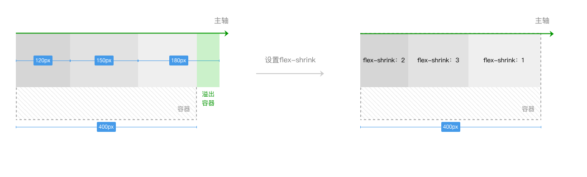
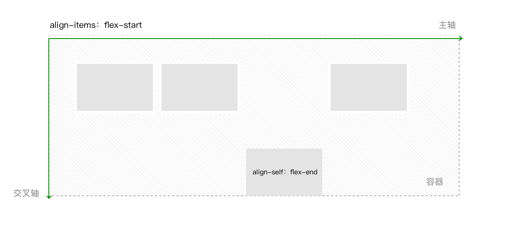

4.2 Basic Layout - Flex
If you have experience in flexbox layout, you can skip this chapter. But attention that if you want to support iOS before iOS8, you need to enable style auto completion at "project（项目）”-> "project settings（项目设置）" -> "auto style completion at uploading（上传代码时样式自动补全）".
In mini programs, adaption for different devices of different screen sizes must be considered. In web we use Box Model, display:inline | block | inline-block, position, float are used to do the layout, but not flexible enought to create some special layouts, such as following list which requirs vertically middle-aligned with uncertain height.
Figure 4-3 a common list layout
For this case flex is a better option.
Before we begin, we need some word conventions. From now on, "Container" menas elements that uses flex layout, class name "container" is used in code examples, elements in container is called "items", class name "item" is attached.
Figure 4-4 container and item4
4.2.1 basic concepts
The concept of flex is first proposed in 2009, its purpose is to provide a more flexible layout model, to enable conainer to best layout items according to their dimensions and order, this makes adaption easier.
In the above exmaple, we could acheive vertically middle alignment by setting following 2 attributes:
.container{
display: flex;
flex-direction: column;
justify-content: center;
}
Flex is not ONE property, it is a set of new rules. Some rules are for containers and some for items.
For containers there are:
display:flex;
flex-direction:row（default） | row-reverse | column |column-reverse
flex-wrap:nowrap（default） | wrap | wrap-reverse
justify-content:flex-start（default） | flex-end | center |space-between | space-around | space-evenly
align-items:stretch（default） | center | flex-end | baseline | flex-start
align-content:stretch（default） | flex-start | center |flex-end | space-between | space-around | space-evenly
For items there are:
order:0（default） | <integer>
flex-shrink:1（default） | <number>
flex-grow:0（default） | <number>
flex-basis:auto（default） | <length>
flex:none | auto | @flex-grow @flex-shrink @flex-basis
align-self:auto（default） | flex-start | flex-end |center | baseline| stretch
Before diving into each property, a coordinate system is needed. To default, horionztal direction is main axis, vertical one is cross axis.
 Figure 4-5 default main axis and cross axis
Figure 4-5 default main axis and cross axis
Items are aligned on main axis and newlines are created on cross axis. Cross axis is vertical to main axis.
Figure 4-6 item alignment
The examples listed from here are the default cordinate system.
4.2.2 Container Properties
These properties are to manage item layout in container, including alignment and order.
flex-direction
Set order by setting main axis.
.container{
flex-direction: row（default） | row-reverse | column | column-reverse
}
row(default): main axis is to the right.
row-reverse: main axis is to the left.
column: main axis is from top to bottom.
column-reverse: maxis is from bottom to top.
 Figure 4-7 flex-direction
Figure 4-7 flex-direction
flex-wrap
This enables/disables newlines in item alignment, and the direction when newlines are added.
.container{
flex-wrap: nowrap（default） | wrap | wrap-reverse
}
nowrap(default): no newlines, too many items will overflow wrap: newlines are added if items cannot be put in one line wrap-reverse: same as wrap, but newlines's direction is the reversed.
 Figure 4-8 flex-wrap
Figure 4-8 flex-wrap
justify-content This determines the alignment on main axis, and the space around items.
.container{
justify-content: flex-start（default） | flex-end | center | space-between | space-around| space-evenly
}
flex-start (default): items start at main axis origin, no spaces between items
center: items placed at the center, no spaces between items. The distane to the left and right border are the same
flex-end: items placed at the end of main axis, no spaces between items
space-between: spaces between items are equal, no spaces to the left and right border
space-around: similar to space-beween, but the distance to left or right border is half of spaces between two items
space-evently: spaces between items and the borders are the same.
 Figure 4-9 justify-content
Figure 4-9 justify-content
align-items This determine item alignment in the height of one line
.container{
align-items:stretch（默认值） | flex-start | center | flex-end | baseline
}
stretch(default): items will be stretched to full line height flex-start: top border of items are to the container border center: aligned at the center line flex-end: bottom border of items are to the container bottom baseline: aligned at the line basline
Figure 4-10 align-items
align-content If multiple lines, this set the alignment on cross axis, and how the spaces are placed.
.container{
align-content: stretch(defult) | flex-start | center | flex-end | space-between |space-around | space-evenly
}
stretch(default): if not set item size, items are streched to fill the cross axis. When item size is set, lines are stretched to fill. flex-start: first line meets top border of container, no space between lines. center: lines are placed in the middle, no space between lines. flex-end: last line meets bottom border, no space between lines space-between: spaces between lines are the same, no space to the top and bottom border space-around: spaces between lines are the same, space to the top or bottom border is half of space between lines space-evenly: all space between items or top/bottom borders are the same

 Figure 4-11 align-content
Figure 4-11 align-content
4.2.3 Item properties
Item properties are to set dimension, position and alignment to items.
order
It is to set order of items on main axis, smaller gets more front. Order is integer.
.item{
order: 0（default） | <integer>
}
 Figure 4-12 order
Figure 4-12 order
flex-shrink
When items overflow on main axis, flex-shrink could be used to compress items to adapt. Its value should be non-negative.
.item{
flex-shrink: 1（default） | <number>
}
.item1{
width: 120px;
flex-shrink: 2;
}
.item2{
width: 150px;
flex-shrink: 3;
}
.item3{ // flex-shrink is to 1
width: 180px;
}
To make it simpler to understand, suppose we have a container of 400px width, three items in it each have width of: 120px, 150px, 180px, then set flex-shrink of item 1 and item 2 to 2 and 3.
.container{
display: flex;
width: 400px; // container width is 400px
}
In above example, 400 - (120 + 150 + 180) = -50px so items overflows, when calculating how to shrink them, weight on each item is flex-shrink multiplied by width, totally 120 2 + 150 3+ 180 * 1 = 870. The new width of each item is divided according to the share of weights.
width of item1：120 - 50 120 2 / 870 ≈ 106px
width of item2：150 - 50 150 3 / 870 ≈ 124px
width of item3：180 - 50 180 1 / 870 ≈ 169px
Width is rounded down if decimal part exists.
 Figure 4-14 flex-shrink
Attention that if sum of all flex-shrinks is smaller than 1, things change. Total weight is 120*0.1 + 150*0.2 + 180*0.3 = 96, the overflowing space is 50 * (0.1 + 0.2 + 0.3) / 1 = 30px.
width of item1：120 - 30 120 0.1 / 96 = 116px
width of item2：150 - 30 150 0.2 / 96 = 140px
width of item3：180 - 30 180 0.3 / 96 = 163px
flex-grow
When there are spaces in the main axis, flex-grow could be use to allocate the space. It should be non-negative.
.item{
flex-grow: 0（default） | <number>
}
Say we have a 400px width container, items in it have widths of : 80px, 120px, 140px, set flex-grow of item1 and item2 to 3 and 1.
.container{
display: flex;
width: 400px; // 容器宽度为400px
}
.item1{
width: 80px;
flex-grow: 3;
}
.item2{
width: 120px;
flex-grow: 1;
}
.item3{ // flex-grow is default to 0
width: 140px;
}
In above example, space left is 400 - (80 + 120 + 140) = 60px, so the new widths should be:
width of item1: 80 + 60 * 3 / (3 + 1 + 0) =125px
width of item2: 120 + 60 * 1 / (3 + 1 + 0) =135px
width of item3: 140 + 60 * 0 / (3 + 1 + 0) =140px
Figure 4-14 flex-grow
Attention that if sum of all flex-grows is smaller than 1, it will be considered as 1, if we modify the example:
.container{
display: flex;
width: 400px; // container width
}
.item1{
width: 50px;
flex-grow: 0.1;
}
.item2{
width: 80px;
flex-grow: 0.3;
}
.item3{
width: 110px;
flex-grow: 0.2;
}
In the above example, rest space is 400 - (50 + 80 + 110) = 160px. Since flex-grow addes up to 0.1 + 0.3 + 0.2 = 0.6 < 1, rest space is divided by 160 / 1 = 160px:
width of item1: 50 + 160 * 0.1 = 66px
width of item2: 80 + 160 * 0.3 = 128px
width of item3: 110 + 160 * 0.2 = 142px
flex-basis
When container's flex-direction is row or row-reverse, and width is also set, flex-basis has higher priority than width, which means flex-basis is used instead of width.
When flex-direction is column or column-reverse and height is also set, flex-basis has higher priority than height, which means flex-basis is used instead of height.
But non-auto one has higher priority for flex-basis and width( or height).
.item{
flex-basis: auto（default） | <number>px
}
Figure 4-15 flex-basis
flex
Flex is a shorthand for flex-grow, flex-shrink and flex-basis, default to none which equals to 00 auto. If set to auto, it is the same as 1 1 auto.
.item{
flex: none | auto | @flex-grow @flex-shrink@flex-basis
}
align-self
It is used to set alignment on cross axis, and override align-items of container. This could set special alignments, it is default to auto, inherit the align-items of container, if align-items is not set, stretch is used.
.item{
align-self: auto（default） | flex-start | center | flex-end | baseline |stretch
}
 Figure 4-16 align-self